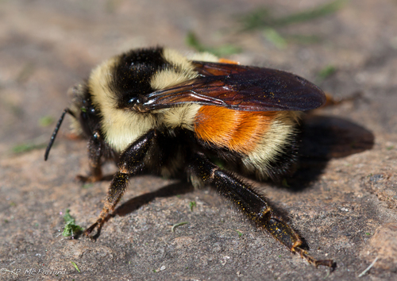
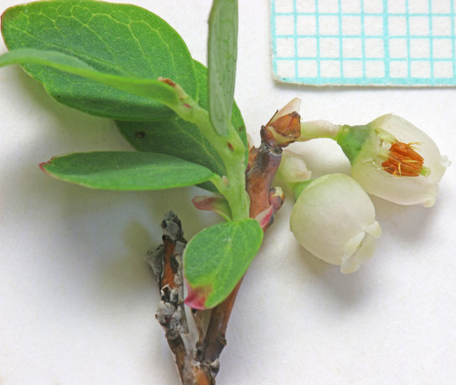
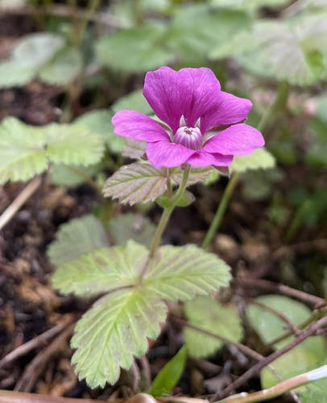

Tricoloured Bumble Bee
Bombus ternarius native bee

Orange-banded bumble bee of boreal and parkland edges; forages willow, blueberry, goldenrod.
79 documented plant relationships.
sips nectar at
 Douglas Goldman, some rights reserved (CC BY-SA), uploaded by Douglas Goldman") BearberryArctostaphylos uva-ursiBebb's WillowSalix bebbianaBlanketflowerGaillardia aristata
BearberryArctostaphylos uva-ursiBebb's WillowSalix bebbianaBlanketflowerGaillardia aristata
Bog BlueberryVaccinium uliginosum Boreal YarrowAchillea borealisBunchberryCornus canadensis
Boreal YarrowAchillea borealisBunchberryCornus canadensis Douglas Goldman, some rights reserved (CC BY-SA), uploaded by Douglas Goldman") Canada GoldenrodSolidago canadensis
Canada GoldenrodSolidago canadensis Jim Morefield, some rights reserved (CC BY), uploaded by Jim Morefield") Canada Milk VetchAstragalus canadensis
Canada Milk VetchAstragalus canadensis Douglas Goldman, some rights reserved (CC BY-SA), uploaded by Douglas Goldman") ChokecherryPrunus virginiana
ChokecherryPrunus virginiana davecz2, some rights reserved (CC BY-SA), uploaded by davecz2") Common AlumrootHeuchera richardsonii
Common AlumrootHeuchera richardsonii tomasz przechlewski, some rights reserved (CC BY)") Common SnowberrySymphoricarpos albus
Common SnowberrySymphoricarpos albus Matt Lavin, some rights reserved (CC BY-SA)") Dotted BlazingstarLiatris punctata
Dotted BlazingstarLiatris punctata
Dwarf RaspberryRubus arcticusElegant GoldenrodSolidago lepida Douglas Goldman, some rights reserved (CC BY-SA), uploaded by Douglas Goldman") FireweedChamaenerion angustifolium
FireweedChamaenerion angustifolium Douglas Goldman, some rights reserved (CC BY-SA), uploaded by Douglas Goldman") Flat-topped GoldenrodEuthamia graminifolia
Flat-topped GoldenrodEuthamia graminifolia Michael J. Papay, some rights reserved (CC BY), uploaded by Michael J. Papay") Flat-topped White AsterDoellingeria umbellata
Flat-topped White AsterDoellingeria umbellata Alan Prather, some rights reserved (CC BY), uploaded by Alan Prather") Giant HyssopAgastache foeniculum
Giant HyssopAgastache foeniculum Matt Lavin, some rights reserved (CC BY-SA)") Golden BeanThermopsis rhombifolia
Golden BeanThermopsis rhombifolia peganum, some rights reserved (CC BY-SA)") Golden Currant (Buffalo Currant)Ribes aureum
Golden Currant (Buffalo Currant)Ribes aureum Tero Laakso, some rights reserved (CC BY-SA)") Jerusalem ArtichokeHelianthus tuberosus
Jerusalem ArtichokeHelianthus tuberosus Joe-Pye WeedEutrochium maculatum
Joe-Pye WeedEutrochium maculatum Andreas Stiller, some rights reserved (CC BY), uploaded by Andreas Stiller") Late GoldenrodSolidago gigantea
Late GoldenrodSolidago gigantea Lindley's AsterSymphyotrichum ciliolatum
Lindley's AsterSymphyotrichum ciliolatum
Benjamin Zwittnig, some rights reserved (CC BY)") Low BilberryVaccinium myrtillusMany-flowered Aster (Tufted White Prairie Aster)Symphyotrichum ericoides
Low BilberryVaccinium myrtillusMany-flowered Aster (Tufted White Prairie Aster)Symphyotrichum ericoides eeyipes, some rights reserved (CC BY)") Marsh MarigoldCaltha palustrisMaximilian SunflowerHelianthus maximiliani
Marsh MarigoldCaltha palustrisMaximilian SunflowerHelianthus maximiliani aarongunnar, some rights reserved (CC BY), uploaded by aarongunnar") Meadow BlazingstarLiatris ligulistylis
Meadow BlazingstarLiatris ligulistylis Sarah Johnson, some rights reserved (CC BY), uploaded by Sarah Johnson") MeadowsweetSpiraea albaNarrow-leaved HawkweedHieracium umbellatumNorthern Black CurrantRibes hudsonianum
MeadowsweetSpiraea albaNarrow-leaved HawkweedHieracium umbellatumNorthern Black CurrantRibes hudsonianum Carrie Seltzer, some rights reserved (CC BY), uploaded by Carrie Seltzer") Northern HedysarumHedysarum boreale
Northern HedysarumHedysarum boreale Caleb Catto, some rights reserved (CC BY), uploaded by Caleb Catto") Pale AgoserisAgoseris glauca
Pale AgoserisAgoseris glauca Tom Norton, some rights reserved (CC BY), uploaded by Tom Norton") Pearly EverlastingAnaphalis margaritacea
Pearly EverlastingAnaphalis margaritacea Tom Norton, some rights reserved (CC BY), uploaded by Tom Norton") Pin CherryPrunus pensylvanicaPink Spirea (Rose Meadowsweet)Spiraea alba var. latifolia
Pin CherryPrunus pensylvanicaPink Spirea (Rose Meadowsweet)Spiraea alba var. latifolia Meghan Cassidy, some rights reserved (CC BY-SA), uploaded by Meghan Cassidy") Prairie ConeflowerRatibida columnifera
Prairie ConeflowerRatibida columnifera Syd Cannings, some rights reserved (CC BY), uploaded by Syd Cannings") Prairie CrocusPulsatilla nuttallianaPrairie GoldenrodSolidago missouriensis
Prairie CrocusPulsatilla nuttallianaPrairie GoldenrodSolidago missouriensis Joshua Mayer, some rights reserved (CC BY-SA)") Prairie RoseRosa arkansanaPrairie ThistleCirsium flodmanii
Prairie RoseRosa arkansanaPrairie ThistleCirsium flodmanii Tom Norton, some rights reserved (CC BY), uploaded by Tom Norton") Prickly Wild RoseRosa acicularisPurple ConeflowerEchinacea angustifoliaPurple Prairie CloverDalea purpurea
Prickly Wild RoseRosa acicularisPurple ConeflowerEchinacea angustifoliaPurple Prairie CloverDalea purpurea Douglas Goldman, some rights reserved (CC BY-SA), uploaded by Douglas Goldman") Purple-stemmed Tall Aster (Swamp Aster)Symphyotrichum puniceum
Purple-stemmed Tall Aster (Swamp Aster)Symphyotrichum puniceum bobkennedy, some rights reserved (CC BY-SA), uploaded by bobkennedy") Pussy WillowSalix discolor
Pussy WillowSalix discolor giantcicada, some rights reserved (CC BY), uploaded by giantcicada") Red Osier DogwoodCornus sericea
Red Osier DogwoodCornus sericea Saline Shooting StarPrimula pauciflora
Saline Shooting StarPrimula pauciflora Douglas Goldman, some rights reserved (CC BY-SA), uploaded by Douglas Goldman") Self-healPrunella vulgarisShooting StarDodecatheon pulchellumShrubby CinquefoilDasiphora fruticosa
Self-healPrunella vulgarisShooting StarDodecatheon pulchellumShrubby CinquefoilDasiphora fruticosa Ryan Hodnett, some rights reserved (CC BY-SA)") SilverberryElaeagnus commutata
SilverberryElaeagnus commutata Slender Cinquefoil (Graceful Cinquefoil)Potentilla gracilis
Slender Cinquefoil (Graceful Cinquefoil)Potentilla gracilis aarongunnar, some rights reserved (CC BY), uploaded by aarongunnar") Smooth AsterSymphyotrichum laeveSneezeweedHelenium autumnale
Smooth AsterSymphyotrichum laeveSneezeweedHelenium autumnale gwt2102, some rights reserved (CC BY)") Spreading DogbaneApocynum androsaemifolium
Spreading DogbaneApocynum androsaemifolium Matt Lavin, some rights reserved (CC BY-SA)") Stiff GoldenrodSolidago rigidaSweet Broom (Alpine Sweetvetch)Hedysarum alpinum
Stiff GoldenrodSolidago rigidaSweet Broom (Alpine Sweetvetch)Hedysarum alpinum Sandy Wolkenberg, some rights reserved (CC BY), uploaded by Sandy Wolkenberg") Tall GoldenrodSolidago altissima
Tall GoldenrodSolidago altissima Gavin Slater, some rights reserved (CC BY), uploaded by Gavin Slater") ThimbleberryRubus parviflorus
ThimbleberryRubus parviflorus Matt Lavin, some rights reserved (CC BY-SA)") Three Flowered Avens (Prairie Smoke, Old Man's Whiskers)Geum triflorum
Three Flowered Avens (Prairie Smoke, Old Man's Whiskers)Geum triflorum naturalist charlie, some rights reserved (CC BY), uploaded by naturalist charlie") Velvet-leaf BlueberryVaccinium myrtilloides
Velvet-leaf BlueberryVaccinium myrtilloides Mary Krieger, some rights reserved (CC BY), uploaded by Mary Krieger") Western SnowberrySymphoricarpos occidentalis
Western SnowberrySymphoricarpos occidentalis tzeducation, some rights reserved (CC BY), uploaded by tzeducation") Wild BergamotMonarda fistulosa
Wild BergamotMonarda fistulosa Pohled 111, some rights reserved (CC BY-SA)") Wild ChivesAllium schoenoprasumWild GooseberryRibes oxyacanthoides
Wild ChivesAllium schoenoprasumWild GooseberryRibes oxyacanthoides Matt Lavin, some rights reserved (CC BY-SA)") Wild LicoriceGlycyrrhiza lepidotaWild MintMentha canadensis
Wild LicoriceGlycyrrhiza lepidotaWild MintMentha canadensis Ole Husby, some rights reserved (CC BY-SA)") Wild RaspberryRubus idaeus
Wild RaspberryRubus idaeus Abby Hyde, some rights reserved (CC BY), uploaded by Abby Hyde") Wild StrawberryFragaria virginiana
Wild StrawberryFragaria virginiana Andrea Romero, some rights reserved (CC BY), uploaded by Andrea Romero") Wild VetchVicia americana
Wild VetchVicia americana Michael J. Papay, some rights reserved (CC BY), uploaded by Michael J. Papay") Willow AsterSymphyotrichum lanceolatum
Willow AsterSymphyotrichum lanceolatum Don Loarie, some rights reserved (CC BY), uploaded by Don Loarie") Woods' RoseRosa woodsii
Woods' RoseRosa woodsii Harvey Barrison, some rights reserved (CC BY-SA)")